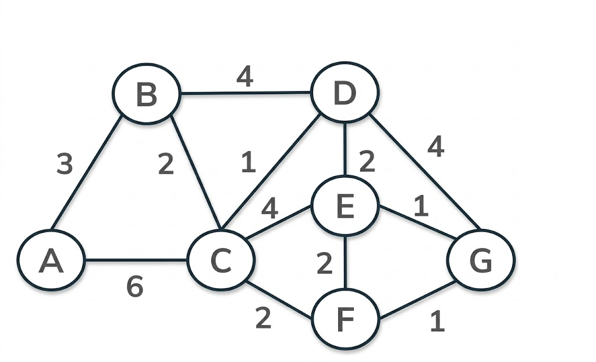
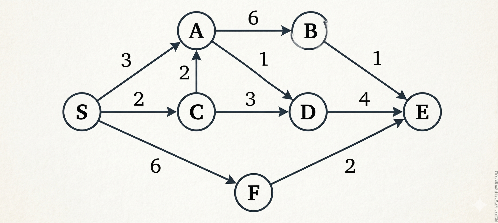

B.Tech. III Semester
Examination, December 2025
Grading System (GS)
Max Marks: 70 | Time: 3 Hours
Note:
i) Attempt any five questions.
ii) All questions carry equal marks.
a) What is a data structure? Differentiate between primitive and non-primitive data structures. (Unit 1)
b) Discuss time complexity and space complexity in detail. Explain best-case, worst-case and average-case time complexity with appropriate examples. (Unit 1)
a) Write an algorithm for Quick sort. Use Quick sort algorithm to sort the following elements: 2, 8, 7, 1, 3, 5, 6, 4. (Unit 2)
b) Write a program in C language to implement binary search algorithm. Also discuss the average behavior of the algorithm. (Unit 2)
a) Define an array. Explain the need for arrays in programming. Describe the declaration, initialization and storage of arrays with suitable examples. (Unit 2)
b) What is B-Tree? Write the various properties of B-Tree. Show the results of inserting the keys F, S, Q, K, C, L, H, T, V, W, M, R, N, P, A, B in order into a empty B-Tree of order 5. (Unit 5)
a) What is Stack? Write a C program for linked list implementation of stack. (Unit 3)
b) Explain different types of queues. Discuss circular queue, double-ended queue and priority queue along with their functions and applications. (Unit 3)
a) What is spanning tree? Write down the Prim's algorithm to obtain minimum cost spanning tree. Use Prim's algorithm to find the minimum cost spanning tree in the following graph: (Unit 5)

b) Write the Dijkstra algorithm for shortest path in a graph and also find the shortest path from 'S' to all remaining vertices of graph in the following graph: (Unit 5)

a) How to represent the polynomial using linked list? Write a C program to add two polynomials using linked list. (Unit 4)
b) Discuss doubly linked list. Write an algorithm to insert a node after a given node in singly linked list. (Unit 4)
a) Convert the following infix expression into postfix form. Show stack contents at each step.
(A+B)*(C-D) (Unit 3)
b) Discuss left skewed and right skewed binary tree. Construct an AVL tree by inserting the following elements in the order of their occurrence: 60, 2, 14, 22, 13, 111, 92, 86. (Unit 5)
a) Explain Red black trees also discuss the properties of red black tree. (Unit 5)
b) Construct an expression tree for the expression and apply inorder, preorder and postorder traversals on tree.
(a+bc)+((de+f)*g) (Unit 5)